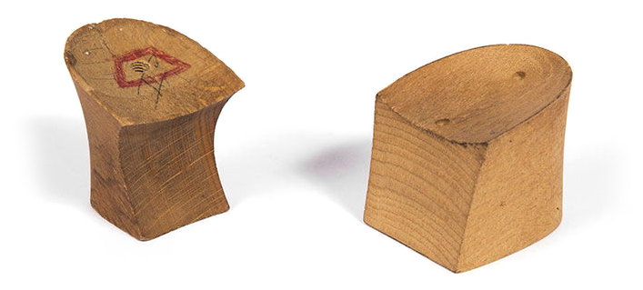
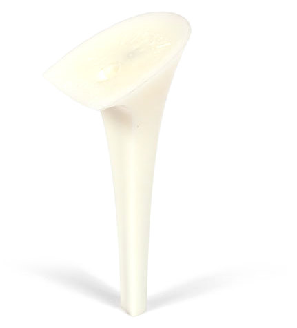
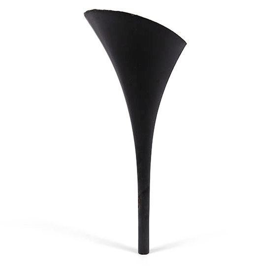
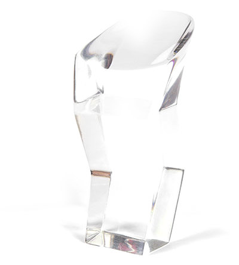
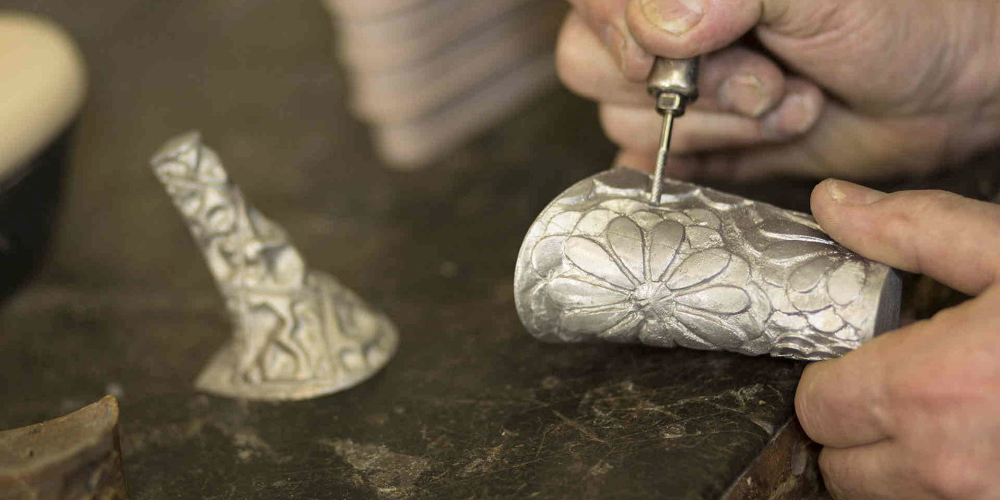
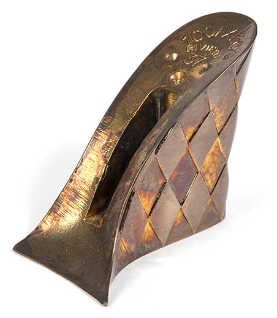

Tacchi per le calzature di lusso




Progettiamo e produciamo tacchi per i calzaturifici delle grandi griffe, dal disegno del cliente alla serie. Nella Riviera del Brenta dal 1945.
Inviaci il disegnoStiletto a calice, nero

Dal disegno al tacco
Il cliente presenta un disegno con la sua idea: noi la interpretiamo e la realizziamo, fino al pezzo di serie.
1Il disegno
Si parte sempre dal disegno della griffe.
2Il progetto
Il disegno, interpretato, diventa il progetto al CAD.
3Il prototipo
Il prototipo, color avorio o in legno, si prova sotto la scarpa e si corregge a matita.
4La serie
Stampaggio a iniezione, finissaggio e imballaggio. Ogni pezzo viene controllato.
Il nostro nome, inciso sul piano
Un tacco in ottone a losanghe, dalla galleria dei nostri pezzi.

- 1RIVIERA e 37 incisi sul piano
- 2Losanghe sul fianco
Tre generazioni di Boldrin
- 1945
Giovanni Boldrin, con il figlio Valentino, realizza il primo tacco in legno.
- 1970
Valentino introduce la lavorazione delle materie plastiche. Negli anni 80 l’azienda passa al figlio Fabio.
- 2010
Fabio Boldrin inaugura una nuova sede, con macchinari nuovi.
Sistemi certificati
Progettazione e fabbricazione di tacchi in plastica per calzature di lusso: stampaggio a iniezione, finissaggio, imballaggio. Ente SGS.
| ISO 14001:2015 | Ambiente | IT23/00000326 |
| ISO 45001:2018 | Salute e sicurezza sul lavoro | IT23/00000328 |
| ISO 50001:2018 | Energia | IT23/00001097 |
Diamo forma alla tua idea?
Fax +39 049 504969
- Sede operativa e amministrativa
- Viale Serenissima 30
30030 Vigonovo (VE)
Apri la mappa - Sede legale
- Via Pola 22
30039 Stra (VE)